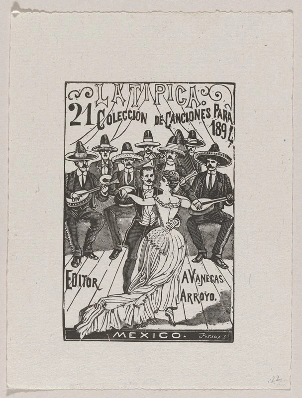
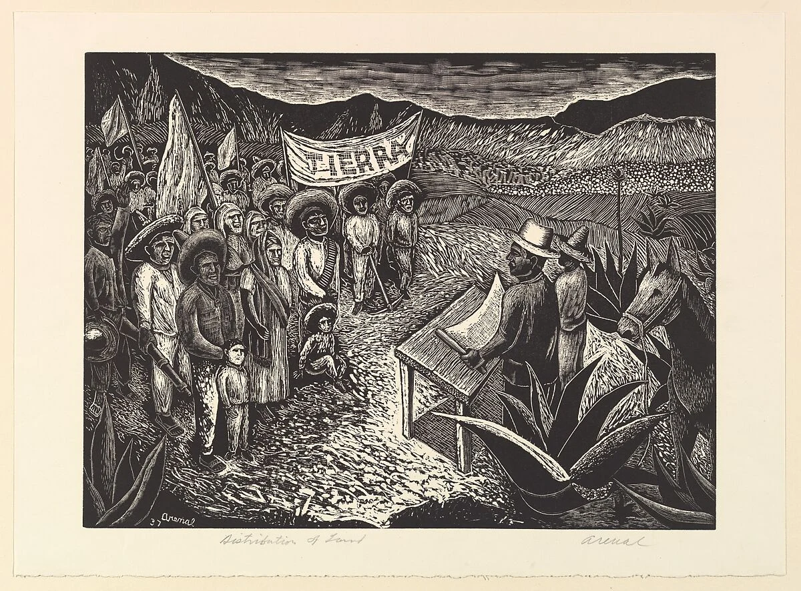
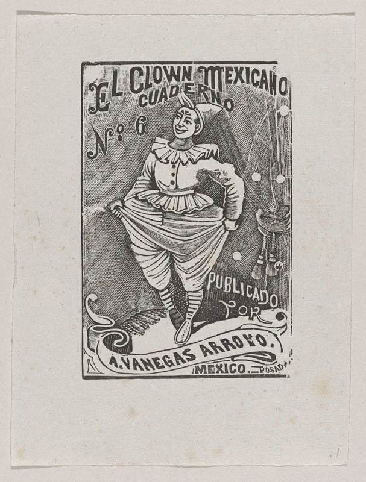
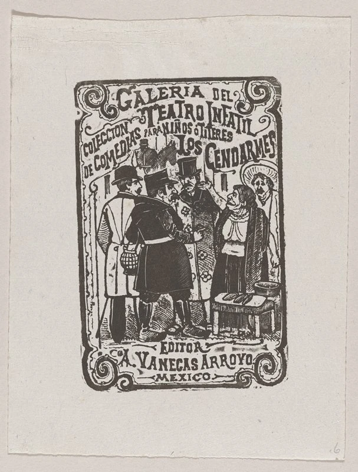
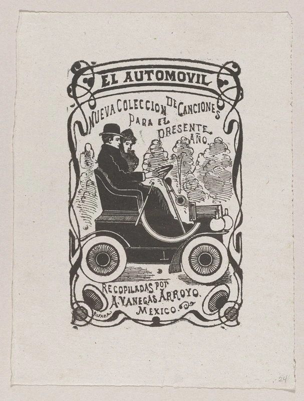

見どころ
第22葉。手前で組んで踊る人々、その向こうに並ぶ楽器の奏者。1894年の原版を工房が1942年に刷り、音楽と踊りの場面を次の世代へ届けました。
作品・制作の例8件を紹介しています。実作品画像5点、参照・関連画像0点。画像の収集は継続中です。
共同制作の工房・団体
Taller de Gráfica Popular
版画は、同じ絵を何枚も刷ることができます。民衆版画工房は、その力を使って、人々の暮らしや社会の問題を伝えたメキシコの工房です。労働運動の集会や街頭でも、ポスターや配布物が人々へ届けられました。
実作品を見る

画像を表示できませんでした。下の出典ページで確認できます。
ホセ・グアダルーペ・ポサダ（原版）／民衆版画工房（印刷）／ラ・エスタンパ・メヒカーナ（刊行） / 1894年の原版、1942年刊
第22葉。手前で組んで踊る人々、その向こうに並ぶ楽器の奏者。1894年の原版を工房が1942年に刷り、音楽と踊りの場面を次の世代へ届けました。
Minneapolis Institute of Art, Gift of Lisa and David Erickson / Public Domain（全図をWebPに変換）
出典で作品・資料を見る ↗Public Domain（所蔵館表示）
原版作者は1913年没。ミネアポリス美術館の作品別データはPublic Domain。
出典先の原画像を開く ↗作品の所蔵・権利情報 ↗画像の利用条件 ↗図版全体を保ち、表示用のWebP画像を作成。
実作品を見る

画像を表示できませんでした。下の出典ページで確認できます。
ルイス・アレナル（原作）／WPA（刊行） / 1937年
「土地」と記した旗の下に、農民が集まります。民衆版画工房の創設者アレナルが、工房を結成したのと同じ年に制作した木版画です。この一枚はアメリカのWPAが刊行しました。
The Metropolitan Museum of Art / Open Access, CC0 1.0（全図をWebPに変換）
出典で作品・資料を見る ↗CC0 1.0
メトロポリタン美術館による作品別Public Domain指定。画像はOpen Access。
出典先の原画像を開く ↗作品の所蔵・権利情報 ↗画像の利用条件 ↗図版全体を保ち、表示用のWebP画像を作成。
実作品を見る

画像を表示できませんでした。下の出典ページで確認できます。
ホセ・グアダルーペ・ポサダ（原版）／民衆版画工房（印刷）／ラ・エスタンパ・メヒカーナ（刊行） / 1942年刊（ポサダ没後の刷り）
第1葉。衣装の大きさを強調した道化師と、それを囲む文字が一枚の表紙をつくります。工房は出版物のために彫られたポサダの原版を刷り直し、25点の版画集の冒頭に置きました。
Minneapolis Institute of Art, Gift of Lisa and David Erickson / Public Domain（全図をWebPに変換）
出典で作品・資料を見る ↗Public Domain（所蔵館表示）
原版作者は1913年没。ミネアポリス美術館の作品別データはPublic Domain。
出典先の原画像を開く ↗作品の所蔵・権利情報 ↗画像の利用条件 ↗図版全体を保ち、表示用のWebP画像を作成。
実作品を見る

画像を表示できませんでした。下の出典ページで確認できます。
ホセ・グアダルーペ・ポサダ（原版）／民衆版画工房（印刷）／ラ・エスタンパ・メヒカーナ（刊行） / 1942年刊（ポサダ没後の刷り）
第6葉。制服姿の人物を、渦を巻く飾りと何段もの文字が取り囲みます。工房による1942年の刷りでは、もとは大衆向けの冊子で人目を引いた絵と題字を一緒に見られます。
Minneapolis Institute of Art, Gift of Lisa and David Erickson / Public Domain（全図をWebPに変換）
出典で作品・資料を見る ↗Public Domain（所蔵館表示）
原版作者は1913年没。ミネアポリス美術館の作品別データはPublic Domain。
出典先の原画像を開く ↗作品の所蔵・権利情報 ↗画像の利用条件 ↗図版全体を保ち、表示用のWebP画像を作成。
実作品を見る

画像を表示できませんでした。下の出典ページで確認できます。
ホセ・グアダルーペ・ポサダ（原版）／民衆版画工房（印刷）／ラ・エスタンパ・メヒカーナ（刊行） / 1942年刊（ポサダ没後の刷り）
第24葉。大きな車輪を横から描き、その上に乗客を並べています。工房が刷り直した版画集には、音楽や職業だけでなく、新しい乗り物に目を向けた大衆出版の図柄も入りました。
Minneapolis Institute of Art, Gift of Lisa and David Erickson / Public Domain（全図をWebPに変換）
出典で作品・資料を見る ↗Public Domain（所蔵館表示）
原版作者は1913年没。ミネアポリス美術館の作品別データはPublic Domain。
出典先の原画像を開く ↗作品の所蔵・権利情報 ↗画像の利用条件 ↗図版全体を保ち、表示用のWebP画像を作成。
リノカット
壁のポスターを見る労働者を描いたリノカットです。工房自身の活動を伝える配布物に使われ、制作と広報がつながっています。
作品・資料の出典を見る ↗作品名（出典表記）：TGPとは何か（¿Qué es el TGP?）
レオポルド・メンデス / 1949年 / リノカット
この作品一つで、すべての活動を代表するわけではありません。
木版画
開いた本の上に横たわる画家と、不穏な集団を対比する木版画です。戦争やファシズムへの警戒を、強い明暗で伝えます。
作品・資料の出典を見る ↗作品名（出典表記）：これから起こりうること（Lo que puede venir）
レオポルド・メンデス / 1945年 / 木版画
この作品一つで、すべての活動を代表するわけではありません。
共同制作の版画集
85点の版画で革命の歴史を伝える共同制作です。一人の英雄だけでなく、多くの人々の経験を、複数の作者が描く仕事です。
作品・資料の出典を見る ↗作品名（出典表記）：メキシコ革命の版画集（Estampas de la Revolución Mexicana）
民衆版画工房の16人の作家 / 1947年 / 共同制作の版画集
資料に記載された1947年版の85点・16人を対象にします。
手漉き紙に亜鉛版／『ホセ・グアダルーペ・ポサダ版画25選』
第22葉。手前で組んで踊る人々、その向こうに並ぶ楽器の奏者。1894年の原版を工房が1942年に刷り、音楽と踊りの場面を次の世代へ届けました。
作品・資料の出典を見る ↗原題：La Típica
ホセ・グアダルーペ・ポサダ（原版）／民衆版画工房（印刷）／ラ・エスタンパ・メヒカーナ（刊行） / 1894年の原版、1942年刊 / 手漉き紙に亜鉛版／『ホセ・グアダルーペ・ポサダ版画25選』
木口木版
「土地」と記した旗の下に、農民が集まります。民衆版画工房の創設者アレナルが、工房を結成したのと同じ年に制作した木版画です。この一枚はアメリカのWPAが刊行しました。
作品・資料の出典を見る ↗原題：Distribution of Land
ルイス・アレナル（原作）／WPA（刊行） / 1937年 / 木口木版
手漉き紙に亜鉛版／『ホセ・グアダルーペ・ポサダ版画25選』
第1葉。衣装の大きさを強調した道化師と、それを囲む文字が一枚の表紙をつくります。工房は出版物のために彫られたポサダの原版を刷り直し、25点の版画集の冒頭に置きました。
作品・資料の出典を見る ↗原題：El Clown Mexicano
ホセ・グアダルーペ・ポサダ（原版）／民衆版画工房（印刷）／ラ・エスタンパ・メヒカーナ（刊行） / 1942年刊（ポサダ没後の刷り） / 手漉き紙に亜鉛版／『ホセ・グアダルーペ・ポサダ版画25選』
手漉き紙に亜鉛版／『ホセ・グアダルーペ・ポサダ版画25選』
第6葉。制服姿の人物を、渦を巻く飾りと何段もの文字が取り囲みます。工房による1942年の刷りでは、もとは大衆向けの冊子で人目を引いた絵と題字を一緒に見られます。
作品・資料の出典を見る ↗原題：Los Gendarmes
ホセ・グアダルーペ・ポサダ（原版）／民衆版画工房（印刷）／ラ・エスタンパ・メヒカーナ（刊行） / 1942年刊（ポサダ没後の刷り） / 手漉き紙に亜鉛版／『ホセ・グアダルーペ・ポサダ版画25選』
手漉き紙に亜鉛版／『ホセ・グアダルーペ・ポサダ版画25選』
第24葉。大きな車輪を横から描き、その上に乗客を並べています。工房が刷り直した版画集には、音楽や職業だけでなく、新しい乗り物に目を向けた大衆出版の図柄も入りました。
作品・資料の出典を見る ↗原題：El Automóvil
ホセ・グアダルーペ・ポサダ（原版）／民衆版画工房（印刷）／ラ・エスタンパ・メヒカーナ（刊行） / 1942年刊（ポサダ没後の刷り） / 手漉き紙に亜鉛版／『ホセ・グアダルーペ・ポサダ版画25選』
1937年に始まり、レオポルド・メンデス、パブロ・オヒギンス、ルイス・アレナルらが関わりました。工房の名前であって、一つの絵柄の名称ではありません。集団で仕事をしながら、それぞれの作者も異なる表現を持っていました。
黒と紙の白を強く対比させる作品では、遠くから何が先に見えるかを考えます。すべてが白黒というわけではありません。
見出しと絵が一緒になって、誰に何を訴えるかを伝えます。作品名だけでなく、配られた目的を読みます。
木やリノリウムを彫り、残った面にインクをつけて刷ります。彫った線が白くなる仕組みが、形の強さに関わります。
一枚の大きなポスターと、何枚もまとめた版画集を比べます。順に見ることで、歴史を語ることもできます。
個人の作品を売ることと、社会へ訴える共同制作は、必ずしも反対ではありません。工房の活動には、街頭のための印刷物も収集家向けの版画集もありました。
同じ画像を広く届けられると、社会との関わりはどう変わるでしょう。いまの画像の共有と、紙を実際に配ることの違いも考えられます。
工房で制作・印刷された作品を、図案の作者、原版と実際に刷られた時期を分けて読みます。
作品・制作の例8件を紹介しています。実作品画像5点、参照・関連画像0点。画像の収集は継続中です。